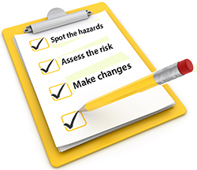

Element 2
Inspect and report on areas of specific hazards and risks
Workplace inspections help prevent injuries and illnesses. Through critical examination of the workplace, inspections identify and record hazards for corrective action. Joint occupational health and safety committees can help plan, conduct, report and monitor inspections. Regular workplace inspections are an important part of the overall occupational health and safety program.
Types of workplace hazards include:
- Safety hazards; e.g., unsafe workplace conditions, unsafe work practices, inadequate machine guards.
- Biological hazards caused by organisms such as viruses, bacteria, fungi and parasites.
- Chemical hazards caused by a solid, liquid, vapour, gas, dust, fume or mist.
- Ergonomic hazards caused by anatomical, physiological, and psychological demands on the worker, such as repetitive and forceful movements, vibration, temperature extremes, and awkward postures arising from improper work methods and improperly designed workstations, tools, and equipment.
- Physical hazards caused by noise, vibration, energy, weather, heat, cold, electricity, radiation and pressure.
- the frequency of planned formal inspections may be set in your legislation
- past accident/incident records
- number and size of different work operations
- type of equipment and work processes--those that are potentially hazardous may require more regular inspections
- new processes or machinery
It is often recommended to conduct inspections as often as committee meetings. Do not conduct an inspection immediately before a committee meeting but try to separate inspections and meetings by at least one week. This time allows for small items to be fixed and gives the committee an opportunity to focus on issues requiring further action.
A Safety inspections will identify all the things that could lead to injury or harm to the health of you or your employees, or at worst that could lead to a death occurring in your workplace.
WorkSafe's ThinkSafe little SAM  always uses the same steps to keep himself and others safe.
always uses the same steps to keep himself and others safe.
|  |
Identify the hazards
First you need to work out how workers could be harmed. When you work on a construction site it’s easy to overlook some hazards, so here are some tips to help you identify the ones that matter:- walk around your workplace and look at what could reasonably be expected to cause harm.
- ask your employees or their representatives what they think. They may have noticed things that are not immediately obvious to you.
- remember to think about long-term hazards to health (eg high levels of noise or exposure to harmful substances) as well as safety hazards.
Hazard Reports
Effective hazard reporting is essential for successful hazard management and to meet expected outcomes.
Implementing the use of Hazard Reports will encourage your staff to identify and report hazards. You can then implement controls before an injury occurs. Encourage staff to complete Hazard Reports for any situation which requires actions beyond simple maintenance.Hazard Reports should be:
- completed by anyone - employees, managers, contractors, volunteers or residents/families
- signed by the person who completes them
- investigated, and improvements planned and implemented by the director/supervisor (in consultation with staff)
- signed by a Health and Safety Committee member or employee representative (if there is one)
- discussed at a Health and Safety Committee or staff meeting.
After discussion at a meeting, you should include comments on the effectiveness of action taken on the Hazard Report. Provide feedback to the staff member who reported the hazard. In larger companies the Occupational Health and Safety Manager will be responsible for an effective Risk Management Process
Example of Workplace Inspection Report
Inspection Location: __________________ Date of Inspection: __________________
Department/Areas Covered: __________ Time of Inspection: _____________
| Observations | For Future Follow-up | |||||||
|---|---|---|---|---|---|---|---|---|
| Item and Location | Hazard(s) Observed | Repeat Item Y / N |
Priority A/B/C |
Recommended Action | Responsible Person | Action Taken | Date | |
Copies to: _________________ Inspected by: ___________________